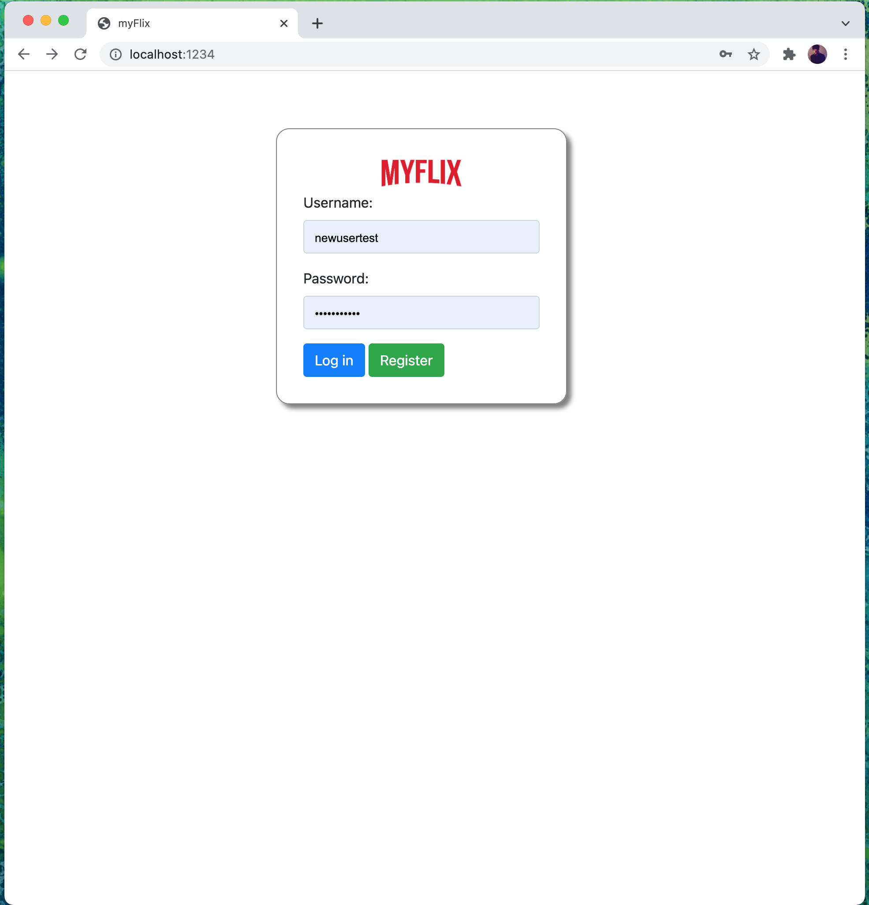

Case Study MyFlix
Overview
myFlix is a web app, developed using the MERN stack, that provides users with access to information about movies, directors, and genres that were previously configured on the server side of the application.
Users are able to create an account, update their personal data, and create a list of favourite movies.
myFlix is a web app, developed using the MERN stack, that provides users with access to information about movies, directors, and genres that were previously configured on the server side of the application. Users are able to create an account, update their personal data, and create a list of favourite movies.
Purpose & Context
myFlix is a project I built as a part of my web development course at CareerFoundry. I create the interface to make requests to, and received responses from the server-sive previously built. The client-side of myFlix includes several interface views built using React library that handle data through the previously-defined REST API endpoints. The purpose of this app was to have a complete web application (client-side and server-side) built using full-stack JavaScrip technologies to master MERN (MongoDB, Express, React, and Node.js) stack.
myFlix is a project I built as a part of my web development course at CareerFoundry. I create the interface to make requests to, and received responses from the server-sive previously built. The client-side of myFlix includes several interface views built using React library that handle data through the previously-defined REST API endpoints. The purpose of this app was to have a complete web application (client-side and server-side) built using full-stack JavaScrip technologies to master MERN (MongoDB, Express, React, and Node.js) stack.
Objective
The goal was to have an ambitious full-stack project I can add to my professional portfolio and to learn how to build a complete server-side and client-side web application from scratch.
The goal was to have an ambitious full-stack project I can add to my professional portfolio and to learn how to build a complete server-side and client-side web application from scratch.

Approach
Server-Side
I created a RESTful API using Node.js and Express, that interacts with a non-relational database (MongoDB). The API can be accessed via commonly used HTTP methods like GET or POST. To retrieve data from and store data in the database, CRUD methods are used. The API provides movie information in JSON format.
To test the API, I used Postman. I also included user authentication and authorization code in the form of basic HTTP authentication and JWT authentication.
Server-Side
I created a RESTful API using Node.js and Express, that interacts with a non-relational database (MongoDB). The API can be accessed via commonly used HTTP methods like GET or POST. To retrieve data from and store data in the database, CRUD methods are used. The API provides movie information in JSON format.
To test the API, I used Postman. I also included user authentication and authorization code in the form of basic HTTP authentication and JWT authentication.
Client-Side
After completing the API, I started to build the interface users would need when making requests to, and receiving responses from, the server-side. It is a single-page, responsive application, developed with React and React-Redux. It provides several interface views, including, but not limited to, a main view (shows a list of all movies), single movie view (shows data about a single movie and allows users to add the movie to their list of favorites), a login view, a registration view and a profile view (where users can update their user data and list of favorites).
Challenges
This was a very challenging project in which I put all my knowledge togheter. I have enjoyed building the API and working with database structures. Developing the client-side was great experience where I felt very comfortable but was hard work to achieve the desired results which I still work on.
Future
As I continue to improve my skills and processes I am learning ways to be more efficient working on other MERN projects to be a better web developer.
